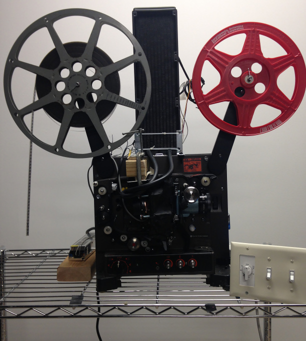
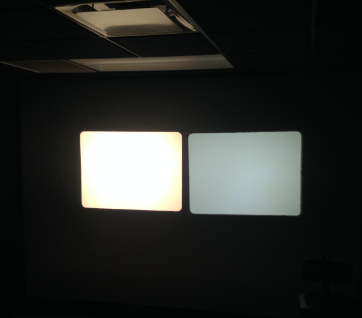
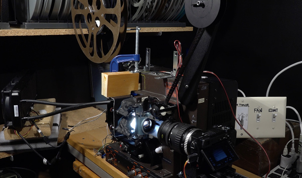

- Music/Sound:
- VSTs for you
- Ringdown, VST
- Ed Myrol, VST
- Music software for you
- Bedtime, resonators
- Keytrails, pitched delay line
- Parody, PD analog mockery
- Music devices at home
- Duophonic guitar pickup
- Toy piano magnetic pickup
- Piano damper tricks
- Harmonizers
- Four string tunings
- Film Tech Archive:
- Motion film hand lab
- Infrared Viewer
- Vertical film drying rack
- Test strip printer
- Film tech small victories
- LED projector
- 16MM Framewise Transfer
- Photochemical
- Action camera color
- Blue reversal
- Carl:
- Show must've went on
- Contact
- Go home now
This page details some custom fixtures made during my time as technician at SUNY Binghamton Cinema.
LED Projector
Behold the liquid-cooled LED 16mm projector. This is a modified Eiki with a ~145 watt LED cooled by a CPU cooler. The switches at the right include a timer that allows one to run the cooling for a number of minutes after the LED has been switched off.
This modification was not successful. The LED is rather larger than the 16mm gate. The optics I used do not concentrate the light effectively. The output is underutilized.
The LED projector is on the right. On the left is a standard 16mm projector. This is with the shutter spinning and no film in the transport. The LED illumination is very even across the frame. I think this indicates how much light is being lost in the housing.
This projector is the base for my current 16mm transfer efforts. I’ve backed off the power and am hoping that the illumination will be well suited to capturing a digital image. The transfer setup will be similar in design and function to Zach Poff’s great solution.
16MM Framewise Transfer

This transfer setup relies on a camera taking frames with a silent/electronic shutter to prevent mechanical wear. This results in rolling shutter artifacts if the film is not totally stable. The radiator fans of the LED cooler caused image distortions from vibrations. These disappeared when the radiator was moved from the projector assembly. Frames are detected by a HAL effect sensor. Our students work with reversal footage that provides a good result with a standard exposure setting and medium jpegs. The system runs at about 2 frames per second under these conditions. The speed is limited by the internal bandwidth of the camera's SD card interface, which is must faster than the USB tether. For more challenging material, it's possible to slow the transfer speed down and set the image format to RAW. This allows timed exposure adjustments in post.
Our super 8 transfer machine works with the same mechanism. It's built off of an Argus Showmaster 870, unusual for being a super 8 projector with manual threading. The optical path is offset with a mirror so the lens can get close enough to the film to focus.